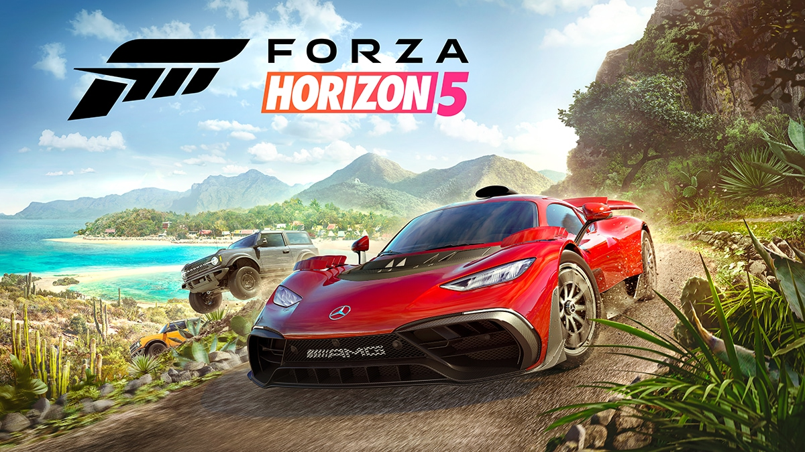

Anii 2020-rezent
A noua generație de console de jocuri video a început în noiembrie 2020 odată cu lansarea familiei de console Microsoft Xbox Series X, Series S și PlayStation 5 de la Sony. Consolele reprezintă îmbunătățiri semnificative de performanță față de Xbox One și PlayStation 4 anterioare, adăugând procesoare grafice și de calcul mai rapide, suport pentru grafica ray-tracing, rezoluție 4K și, în unele cazuri, rezoluție 8K, cu viteze de randare de 60 de cadre pe secundă (fps) sau mai mult. Pe plan intern, ambele familii de console au introdus noi sisteme interne de unități SSD (Solid State Drive) pentru a fi utilizate ca memorie de mare capacitate și sisteme de stocare pentru jocuri, pentru a reduce sau elimina timpii de încărcare și pentru a suporta streaming în joc. Xbox Series S și PlayStation 5 Digital Edition nu au o unitate optică, păstrând în același timp suport pentru distribuția online și stocarea jocurilor pe dispozitive USB externe.
Poziționarea acestor console ca dispozitive de calcul de înaltă performanță plasează concurenți precum Nintendo Switch și serviciile de jocuri în cloud precum Stadia și Amazon Luna ca suprapuneri față de cea de-a opta generație anterioară de console de jocuri video.
Metaversul, jocurile blockchain, NFT-uri și achizițiile de jocuri video
Trecând în anii 2020, conceptul de metavers a crescut în popularitate. Similar ca natură cu spațiile sociale din Second Life, conceptul de metavers se bazează pe utilizarea unei tehnologii mai avansate, cum ar fi realitatea virtuală și augmentată, pentru a crea lumi captivante care nu numai că pot fi folosite pentru funcții sociale și de divertisment, dar și pentru scopuri personale și de afaceri, oferind utilizatorului posibilitatea de a câștiga din participarea la metavers. Roblox este un exemplu mai recent de joc open world care le permite jucătorilor să-și construiască propriile creații în cadrul jocului, cu potențialul de a câștiga bani din aceste creații.
Metaversul de la începutul anilor 2020 era încă bine definit, dar cei care lucrau la tehnologiile în curs de dezvoltare au recunoscut că un sistem financiar ar fi legat de aceste sisteme. Evitând capcanele sistemelor de monetizare anterioare ale jocurilor, dezvoltarea de jocuri și sisteme bazate pe criptomonede care foloseau tehnologii blockchain descentralizate a început să crească în popularitate. Aceste jocuri blockchain s-au bazat frecvent pe tranzacționarea de jetoane nefungibile pe care jucătorii le creau și le îmbunătățiu prin joc, imitând modul în care ar funcționa conținutul metaversului. Unele companii de jocuri video și-au exprimat un sprijin puternic pentru utilizarea blockchain-ului și a NFT-urilor în jocurile lor, cum ar fi Ubisoft, dar a existat, în general, feedback negativ din partea jucătorilor și dezvoltatorilor de jocuri care consideră criptomoneda și NFT o înșelătorie.
Indiferent de aceste evoluții, interesul pentru metavers a dus la un număr mare de achiziții majore în industria jocurilor video la începutul anilor 2020, deoarece editorii mari au adunat mai multe studiouri și alți editori în rândurile lor pentru a-și putea oferi proprietățile în cadrul versiunea părintelui a metaversului, își diversifică ofertele și se pregătește pentru viitor în care platformele de jocuri se îndepărtează de sistemele tradiționale. Tencent Holdings a câștigat pachete de acțiuni în numeroși dezvoltatori de jocuri video începând cu anii 2010, inclusiv proprietatea deplină a Riot Games și proprietatea minoritară a Epic Games. Epic Games a folosit, de asemenea, investiția Tencent și finanțarea ulterioară pentru a achiziționa numeroși dezvoltatori de jocuri video și dezvoltatori de middleware suplimentari în anii 2020, ca parte a obiectivului său de a construi versiunea sa a metaversului folosind motorul său Unreal. Embracer Group a lansat, de asemenea, o serie mare de achiziții care au condus în anii 2020 pentru a-și extinde portofoliul, inclusiv Gearbox Software. Alte achiziții majore din anii 2020 în sprijinul metaversului includ achiziționarea de către Take-Two Interactive a editorului de jocuri mobile Zynga, Sony Interactive Entertainment achiziționarea dezvoltatorului Bungie pentru sprijinirea jocurilor live-service și achizițiile de către Microsoft de ZeniMax Media (inclusiv Bethesda Softworks) și Activision-Blizzard.
 |
Cele mai mari jocuri din 2021:
 |
 |
|  |
 |
 |